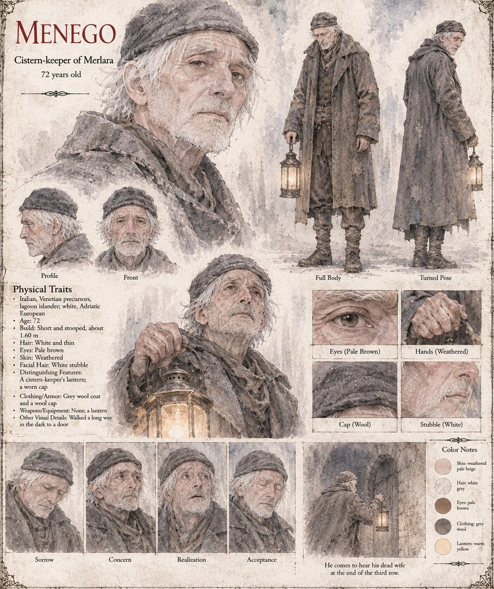

Menego
Cistern-keeper of Merlara · a widower · heard on the first star · 72 on the sheet
Menego is a cistern-keeper from Merlara whose wife died in the winter. As the cantor Sabino Rizzo reads it from the Antiphonary, He came to hear her, and sat three evenings at the end of the third row, and she did not come; it does not speak for those who are not in it. Last night he went up. The next evening, at the first star, with six men of the Company of the Moonless standing among the Listeners, his voice comes up out of the hollow, an old man’s, not afraid, as an old man sounds who has walked a long way in the dark to a door and has just heard it open: “Marisa? I have come.” Then, in a smaller, wondering tone, Oh. It goes on for thirteen seconds and stops in the middle of a breath. The Listeners say his name together, as they do each evening, and Sergeant Piovesan, who has no letters, says it once more, singly, having heard forty voices say it and thinking it wanted a forty-first. At the end of the row is a fresh grave with a flat pale stone, set that day by the sexton: the whole of the valley’s business in a single line, a man; a name; a hole.
The manuscript gives him as an old man by his voice and by the cantor’s entry, and gives no age, height, build, hair or eye colour. The sheet’s age of 72, short stooped build of about 1.60 m, white thin hair, white stubble, pale brown eyes, weathered skin, worn wool cap, grey wool coat and lantern are its own, as are its panels Sorrow, Concern, Realization and Acceptance. Its scene He comes to hear his dead wife at the end of the third row. condenses the cantor’s account, and draws him from behind at a heavy arched door; the door is only the manuscript’s simile, and the lantern is not in the manuscript. Its title, Cistern-keeper of Merlara, condenses the cantor’s entry.
“Marisa? I have come.”